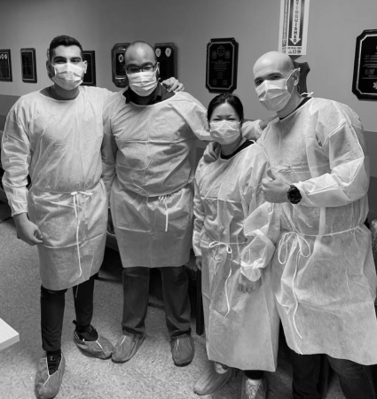
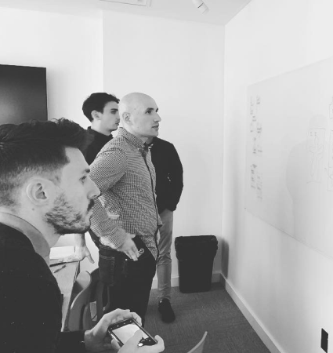
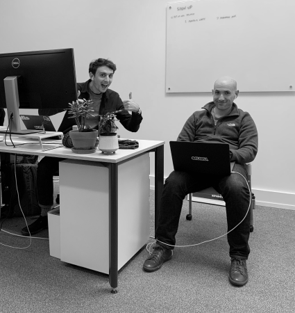

MURU
Empowering Medics Worldwide
The Client: Your Medical Guru
MURU was founded by Steven Blocker. Steven is a paramedic who was sick of the problems in the industry, so he decided to build a solution. He hired our team as well as a diverse group of paramedics and engineers who were driven to help solve this problem.



Research & Discovery
Speaking with both the MURU team as well as Paramedics in the field we were able to start mapping out the key screens we would need to design for the application.

Branding: Changing the Tone
After testing, we realized that the app needed a more serious tone and brand in order to be used effectively and with confidence. Our first approach was too playful to be taken seriously in the field.


Key Screens: Bringing It All Together
The app focuses on search with the ability to use lay-terms to help showcase related queries and results. Toggle the view below to explore the designs.


"The entire Clade team did a phenomenal job. I would highly recommend Clade to anyone looking for a great design partner. Thank you for believing in our team, mission and doing your very best work!"